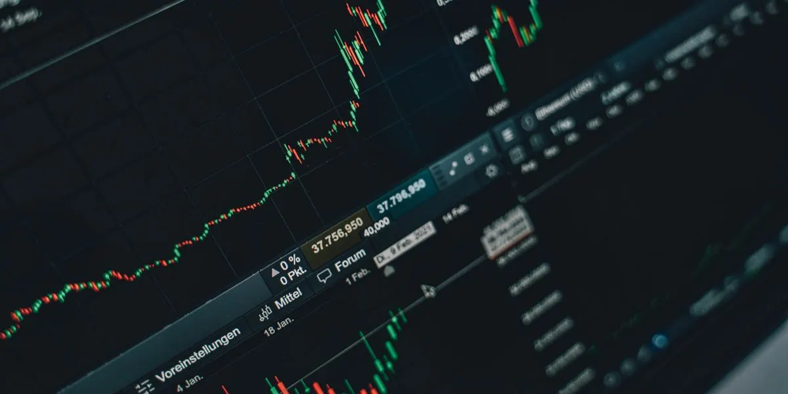

مقدمة: ما هو سوق الأسهم؟
سوق الأسهم هو المكان الذي يتم فيه شراء وبيع حصص الملكية في الشركات المساهمة العامة. عندما تشتري سهماً في شركة ما، فأنت تصبح شريكاً فيها — مالكاً لجزء صغير منها. وعندما تنمو الشركة وتزداد أرباحها، يرتفع سعر سهمها، وبالتالي ترتفع قيمة استثمارك.
لكن سوق الأسهم ليس مجرد مكان للاستثمار طويل الأجل. ملايين المتداولين حول العالم يستخدمون تقلبات الأسعار اليومية والأسبوعية لتحقيق أرباح من خلال ما يُعرف بـ التداول النشط (Active Trading). وهنا تحديداً يأتي دور التعلّم والمنهجية — لأن التداول بدون علم هو مقامرة، والتداول بعلم هو مهنة.
لماذا سوق الأسهم الأمريكي تحديداً؟
من بين جميع أسواق الأسهم في العالم، يبرز السوق الأمريكي كأكبرها وأكثرها تطوراً. وهناك عدة أسباب تجعله الخيار الأول للمتداولين والمستثمرين على مستوى العالم:
- الحجم والسيولة: السوق الأمريكي هو أكبر سوق أسهم في العالم من حيث القيمة السوقية الإجمالية (Market Capitalization)، التي تتجاوز 50 تريليون دولار. هذا يعني أن هناك دائماً مشترين وبائعين، مما يوفر سيولة عالية تسمح لك بالدخول والخروج من الصفقات بسهولة.
- الشفافية والتنظيم: تُشرف هيئة الأوراق المالية والبورصات الأمريكية (SEC) على السوق بقوانين صارمة تحمي المستثمرين وتفرض على الشركات الإفصاح عن بياناتها المالية بشكل دوري. هذه الشفافية تجعل السوق أكثر عدالة وموثوقية.
- تنوع الشركات: يضم السوق الأمريكي آلاف الشركات من مختلف القطاعات — من التكنولوجيا والذكاء الاصطناعي إلى الرعاية الصحية والطاقة. هذا التنوع يتيح للمتداول فرصاً لا نهائية في أي وقت من السنة.
- الوصول العالمي: بفضل التكنولوجيا الحديثة ومنصات التداول الإلكترونية، يمكن لأي شخص في العالم العربي فتح حساب تداول والوصول إلى السوق الأمريكي بسهولة تامة.
كيف يعمل سوق الأسهم؟
يتكون سوق الأسهم الأمريكي من عدة بورصات رئيسية، أبرزها:
- بورصة نيويورك (NYSE): أقدم وأكبر بورصة في العالم، تأسست عام 1792. تضم شركات عملاقة مثل Johnson & Johnson و JPMorgan Chase و Coca-Cola.
- ناسداك (NASDAQ): بورصة إلكترونية تركز بشكل كبير على شركات التكنولوجيا. تضم عمالقة مثل Apple و Microsoft و Amazon و Tesla.
عملية التداول تتم من خلال وسيط (Broker) — وهو الجهة التي تنفذ أوامر الشراء والبيع نيابة عنك. تفتح حساباً لدى الوسيط، تودع أموالك، ثم تستخدم منصة التداول لإرسال أوامرك. عندما ترسل أمر شراء، يبحث النظام عن بائع بنفس السعر أو قريب منه، وتتم الصفقة خلال ثوانٍ.
يعمل السوق الأمريكي من الاثنين إلى الجمعة، من الساعة 9:30 صباحاً حتى 4:00 مساءً بتوقيت نيويورك (الساعة 4:30 مساءً حتى 11:00 مساءً بتوقيت الخليج). هناك أيضاً جلسات ما قبل السوق (Pre-Market) وما بعد السوق (After-Hours) التي تتيح التداول خارج ساعات العمل الرسمية.
مصطلحات أساسية يجب أن تعرفها
قبل أن تبدأ رحلتك في عالم التداول، هناك مصطلحات أساسية يجب أن تفهمها جيداً:
- السهم (Stock/Share): حصة ملكية في شركة مساهمة عامة. كل سهم يمثل جزءاً صغيراً من الشركة.
- سعر الإغلاق (Close Price): آخر سعر تم تداول السهم عنده في نهاية جلسة التداول. يُعتبر من أهم الأسعار لأنه يعكس تقييم السوق النهائي لليوم.
- الحجم (Volume): عدد الأسهم التي تم تداولها خلال فترة زمنية معينة. الحجم الكبير يدل على اهتمام عالٍ بالسهم، والحجم المنخفض يدل على قلة الاهتمام.
- الشارت (Chart): الرسم البياني الذي يعرض حركة سعر السهم عبر الزمن. الشارت هو أداة المتداول الأساسية لتحليل الأسعار واتخاذ القرارات.
- القطاعات (Sectors): تقسيم الشركات حسب مجال عملها — مثل قطاع التكنولوجيا، قطاع الرعاية الصحية، قطاع الطاقة، وغيرها. فهم القطاعات يساعدك على تنويع استثماراتك وتحديد الفرص.
- القيمة السوقية (Market Cap): إجمالي قيمة أسهم الشركة المتداولة. تُحسب بضرب عدد الأسهم في سعر السهم الحالي. تُصنف الشركات إلى كبيرة (Large Cap) ومتوسطة (Mid Cap) وصغيرة (Small Cap).
"سوق الأسهم ليس معقداً كما يعتقد كثيرون. المشكلة أن معظم الناس يدخلون السوق بدون منهج واضح. التعلّم المنظم هو الفرق بين متداول يربح ومتداول يخسر."
— د. حسين طاحون
كيف تبدأ في سوق الأسهم الأمريكي؟
الخطأ الأكبر الذي يرتكبه المبتدئون هو القفز مباشرة إلى التداول الحقيقي بأموال حقيقية دون تعلّم. النتيجة المتوقعة؟ خسائر مؤلمة وإحباط شديد. الطريقة الصحيحة للبدء تمر بثلاث مراحل:
- المرحلة الأولى — التعلّم: ابدأ بفهم أساسيات السوق، وتعلّم قراءة الشارتات، وافهم كيف تعمل المؤشرات والقطاعات. في منهج TD Academy، نبدأ معك من الصفر المطلق في الموسم الأول، ثم ننتقل تدريجياً إلى التحليل الفني والاستراتيجيات المتقدمة.
- المرحلة الثانية — التطبيق على حساب تجريبي: بعد التعلّم، طبّق ما تعلمته على حساب ورقي (Paper Trading) بدون أموال حقيقية. هذا يتيح لك ممارسة التداول واكتساب الخبرة دون مخاطرة.
- المرحلة الثالثة — التداول الحقيقي: بعد أن تبني ثقتك ومهاراتك، ابدأ التداول الحقيقي بمبالغ صغيرة. زِد حجم تداولك تدريجياً كلما تحسنت نتائجك واكتسبت المزيد من الانضباط.
تذكّر: لا يوجد طريق مختصر. كل متداول ناجح مرّ بهذه المراحل الثلاث. الصبر والالتزام بالتعلّم هما أساس النجاح في سوق الأسهم.
الخلاصة
سوق الأسهم الأمريكي يوفر فرصاً هائلة لمن يستعد لها بشكل صحيح. إنه أكبر سوق في العالم، وأكثرها شفافية وسيولة. لكن النجاح فيه لا يأتي بالحظ — بل بالعلم والمنهج والانضباط.
إذا كنت مبتدئاً وتريد أن تبدأ رحلتك بالطريقة الصحيحة، فإن منهج Trading Doctor Academy صُمّم خصيصاً لك. يأخذك من الصفر المطلق — من فهم ما هو السهم — إلى مستوى الاحتراف في التحليل الفني وإدارة المخاطر وبناء استراتيجية تداول كاملة.
التعليقات